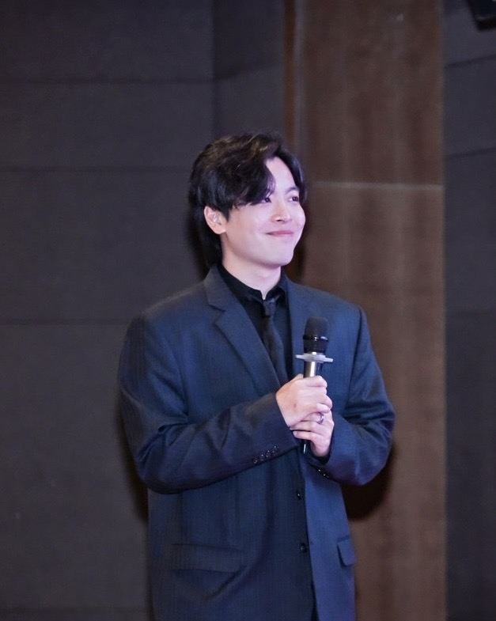

Marketing · Communications · Digital · AI
I build brands, campaigns and digital experiences people actually engage with.
Singapore-based marketer with 6+ years across public-sector campaigns, B2B technology, websites, social media, CRM, analytics and go-to-market execution.
Available for marketing & communications roles
Singapore

Jeremiah LeowMarketing & Digital
Web + Product
Social + Campaigns
01 — Websites
Built from scratch.
Managed in the real world.
I work beyond campaign copy: brand systems, site structure, web content, deployment workflows and product-adjacent experiences.
Created from scratch
Strategy · design · build · launchWebsites managed
CMS · content · deployment · maintenance02 — Public-sector campaigns
Campaign work built for public attention and public trust.
Responsibilities included social media calendars, key visual/icon development, social creatives, campaign management and reporting.
Featured experience
Singapore International Cyber Week
Integrated marketing and content coordination across social, website and communications touchpoints for Singapore's flagship cybersecurity event.
+20% social engagement+15% earned media
Visit SICW ↗
03 — Creative execution
Strategy is only useful when the work ships.
My hands-on work spans the execution formats shown throughout my portfolio: copy, static creative, illustration, photoshoots, short-form video, community content, brand systems, collateral and web design.
05 — KOL & brand collaborations
Brands and events I've worked with.
Creator-facing, event and brand collaboration experience spanning lifestyle, ecommerce and community campaigns.
06 — Personal project
Pokémon TCG, but make it audience development.
Built a personal TikTok channel around ripping Pokémon cards to 4,830 followers. It is a hobby project, but it also demonstrates organic audience building, platform intuition and the ability to create content people return for without a corporate media budget.
07 — About
A marketer who is comfortable inside the campaign, the CMS and the product room.
My experience crosses integrated communications, public-sector accounts, B2B technology, web management, CRM and AI-enabled workflows. I enjoy work where strategy has to survive contact with execution: writing the content, shaping the user journey, coordinating stakeholders, reading the analytics and improving the next iteration.
Capabilities
01
Integrated marketing & communications
02
Social media strategy & campaign management
03
Website strategy, CMS & deployment
04
CRM, analytics & reporting
05
Brand, content & go-to-market
06
AI-assisted marketing workflows
08 — Certifications & training
Marketing foundations, with an AI-native toolkit.
Certified or trained across analytics, marketing operations and modern AI tooling.
Education
Marketing · communicationsGoogle AnalyticsMeta Ads ManagerHubSpotSalesforceAhrefsTikTok AnalyticsWordPressWixIsomerGitHubCodexClaude
09 — Resume
Need the one-page version?
Download my current marketing resume for a concise view of my experience across integrated campaigns, digital strategy, CRM, B2B growth and go-to-market work.
Let's work together
04 — Social & commercial
From institutional campaigns to B2B audience growth.
Content planning, channel management, reporting and creative execution across LinkedIn, Instagram and Twitter/X.
Follower growth in four months.
Built a B2B content rhythm around electronics supply chain, AI and procurement topics while developing the brand's digital voice and positioning.
View company page ↗